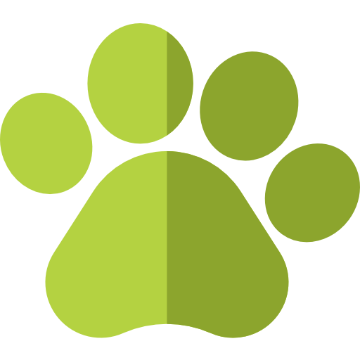

PitaPETZ
BEM-VINDO AO SITE DE ADOÇÃO
Além de vender produtos para seu pet, nós também resgatamos animais em situação de risco. Esta seção é reservada para aqueles que possam dar carinho, amor e um lar para eles.
Conheça os animais

Loli
Porte Médio3 anos
Razor
Porte Médio4 anos
Loli
Porte Pequeno3 meses


©2012-2022